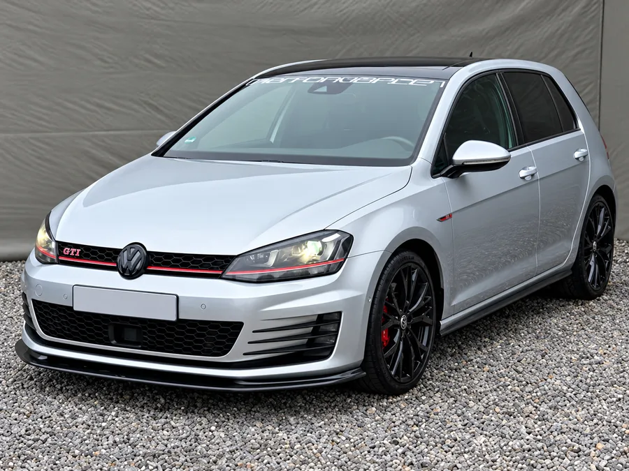
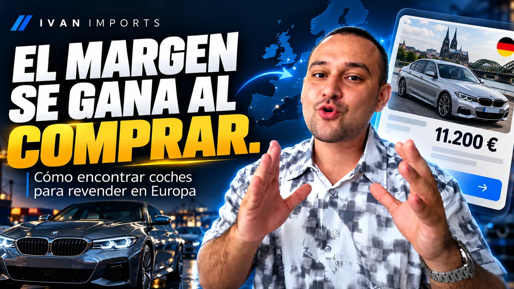

Te enseño a encontrar vehículos con margen en Europa, analizar el mercado español y calcular si realmente merece la pena comprarlos.
Formación completa en vídeo · Pago único · Acceso para siempre

Si con el mismo capital
puedes encontrar mucho más.
Imagina que tienes 12.000 € para comprar.
Encuentras un coche que, después de todos los gastos, podría dejarte 1.000 €. Técnicamente hay margen.
Pero Europa está llena de oferta. Si sigues buscando, cambias de modelo, de versión, de país o de fuente, puede aparecer una operación muchísimo mejor con prácticamente el mismo capital.
Mismo capital
Ejemplos de la diferencia que puede haber entre operaciones. No son resultados garantizados.
El problema no es encontrar un coche rentable.
El trabajo está en encontrar el mejor que puedas antes de poner tu dinero encima de la mesa.
En Europa hay más de 10 millones de vehículos anunciados a la venta. Y cada día aparecen más.
Hay demasiadas opciones
como para conformarte.
con el primero que parece rentable.
No necesitas más dinero.
Necesitas buscar mejor.
Cuando aparece un coche realmente interesante, no eres el único que puede verlo.
Cuanto mejor aprendes a buscar, filtrar y analizar, menos tiempo pierdes con coches mediocres y antes detectas los que merece la pena investigar.
Interfaz ilustrativa. Las cifras son un ejemplo.
Encontrarlo es importante.
Encontrarlo antes también.
Mucha gente me pregunta por dónde empezar.
Mi respuesta casi siempre es la misma: por aprender a buscar.
Porque buscar coches es gratis, es lo primero que puedes hacer y es la habilidad que más vas a necesitar.

Eso es exactamente lo que te enseño en esta formación.
Puedes mejorar las fotos, el anuncio y la negociación después.
Pero el día que compras decides cuánto margen te queda.
El objetivo no es enamorarte de cada coche que encuentras.
Es descartar rápido los mediocres para seguir buscando los que realmente destacan.
Abro los portales, aplico filtros, cambio búsquedas, comparo coches, reviso el mercado español, calculo gastos y descarto operaciones delante de ti. Ves exactamente cómo pienso cuando estoy buscando.
Si buscas exactamente donde buscan todos y filtras exactamente como filtran todos, vas a competir por los mismos coches.
Por eso te enseño a abrir nuevas fuentes: portales locales, webs de vendedores, inventarios y mercados que la mayoría ni mira.
Aquí está mirando todo el mundo.
Sitios que casi nadie revisa.
Aquí suele aparecer la excepción.
Más fuentes =
más posibilidades de
encontrar la excepción.
Un anuncio barato no significa una buena compra.
Primero necesitas saber cuánto puede venderse realmente ese coche en España.
Ver anuncios no basta. Hay que saber leer el mercado.
Tienes que saber a qué precio puedes poner el tuyo para que realmente tenga salida.
Si te pasas de precio, puede quedarse anunciado durante meses.
Mismo modelo, cinco anuncios. ¿Cuál marca el precio real?
Porque buscar bien no consiste en justificar cada coche que encuentras. Consiste en descartar hasta que aparece algo realmente interesante.
Los datos del mercado no acompañaban. Te enseño por qué lo dejo.
Con todos los gastos dentro, no compensa. Siguiente.
Al cambiar de versión aparece una alternativa mejor que investigar.
Pasa todos los filtros y merece un análisis a fondo.
No necesitas memorizar coches.
Necesitas aprender un proceso que puedas repetir una y otra vez.
Identifica candidatos y cambia de enfoque cuando una búsqueda no funciona.
Hay coches que nunca verás en los portales que usa todo el mundo. Aprendes a investigar otras fuentes.
Abre fuentes en Francia y otros mercados europeos y compara la oferta disponible.
El precio de mercado no se calcula, se analiza. Interpreta kilómetros, versión, antigüedad del anuncio y favoritos o interés cuando existan.
Compra, transporte o desplazamiento, matriculación y demás gastos: mira el coste completo antes de decidir.
Búsquedas reales, cómo se analizan los candidatos y por qué algunos se descartan antes de seguir.
Se incorporarán a la formación y estarán incluidas en tu acceso.
O puedes aprender a hacerlo con un método.
Pago único · Precio final · Acceso inmediato · Acceso para siempre
No. Es una formación en vídeo donde me ves buscar vehículos reales, comparar mercados, cambiar de estrategia y descartar coches.
No. Empiezas desde un presupuesto, aunque todavía no sepas qué modelo buscar.
No. Gran parte del curso va de encontrar vehículos fuera de los portales habituales y de abrir fuentes en otros países europeos.
No. Pagas una vez y tienes acceso para siempre.
Sí. Ya incluye todo lo necesario para empezar a buscar, comparar y descartar coches. Y se seguirá ampliando: voy a añadir mejoras y nuevas lecciones con frecuencia, y las actualizaciones están incluidas en tu acceso.
Inmediatamente después del pago. Recibirás el acceso a la formación y podrás empezar desde el primer momento.
Una sola compra mediocre puede costarte mucho más que esta formación.